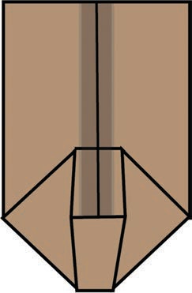

Figure 11: How to fold the bottom part of the paper bag
Open the bottom fold, flatten each corner to make a triangle shape, and press the paper;

Figure 12: How to fold a paper bag in a triangular style
Fold each side of the bottom towards the middle, so that they overlap for about 1 cm, then tape or glue them together.
Fold the bottom flap of the paper bag upward.Turn the folded bottom section upward on the right side.Figure 11: How to fold the bottom part of the paper bag5.Open the bottom fold, flatten each corner to make a triangle shape, and press the paper;Open the bottom fold and press the corners flat to make two triangle shapes.Figure 12: How to fold a paper bag in a triangular style6.Fold each side of the bottom towards the middle, so that they overlap for about 1 cm, then tape or glue them together.